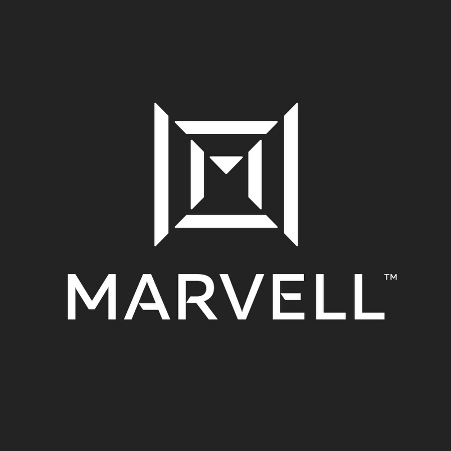
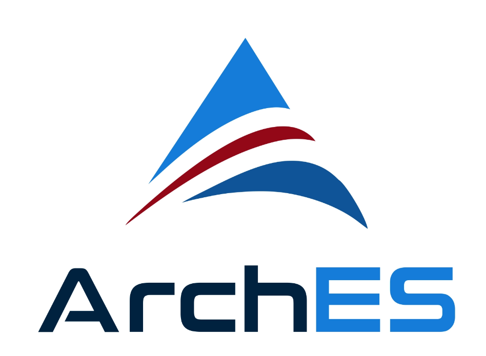
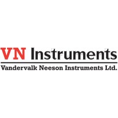
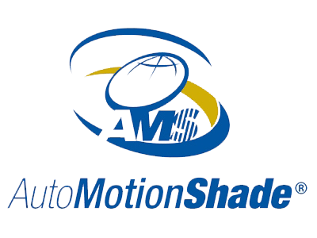
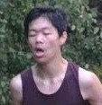
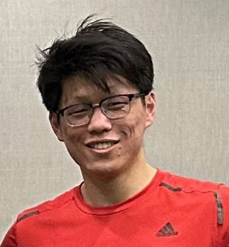

Resume
Education
Bachelor of Mechatronics Engineering
University of Waterloo, 2025
Skills
- Software: Verilog, System Verilog, C++, Python, Java, Git, MATLAB, C#, C, TCL
- Other: UVM, Arduino, LT Spice, PCIe Spec, Vivado, Selenium, Microsoft Office, Confluence
Work Experience

Marvell Technology | Digital Design Verification
Jan 2024 - Aug 2024
Marvell Technology, Inc. is a global leader in semiconductor solutions, specializing in the design and manufacture of advanced data infrastructure technologies that encompass compute, networking, security, and storage. At Marvell I worked on updating and writing UVM testbenches for PCIe 6.0.
Responsibilities
- Improved and updated testbenches to better comply with UVM standards and changes in chip architecture.
- Identified and resolved regression failures by analyzing logfiles and waveform data.
- Completed PCIe MindShare course, gaining in-depth understanding of PCIe specification, specifically 6.0.
Register Field Comparison Script
- Developed Python script to compare 3rd-party HTML registers with company files, identifying discrepancies.
- Implemented capability walk functionality to identify and verify PCIe capability structure with expected.
PCIe 6.0 L0p UVM Test Sequence
- Designed and tested L0p UVM sequence to verify entry into L0p for different lane widths and conditions.
- Gained in-depth knowledge of L0p specifications and edge cases, which were each thoroughly covered.
- Debugged testbench failures using transaction logfiles to determine if issue was RTL or VIP related.

ArchES Computing | FPGA Design Engineer
May 2023 - Aug 2023
ArchES builds high-performance computing platforms to deliver fast, compact, mission-critical data and execution systems for capital markets. At ArchES I enhanced the FPGA Test Platform to support multiple SFPs and network protocols as well as developed a highly efficient AXI4-Stream width conversion module in HLS.
Responsibilities
- Upgraded FPGA Test Platform to support multiple SFPs, send IGMP join requests, and respond to ICMP and ARP.
- Migrated legacy platforms to new shell system, enabling uninterrupted operation while being reprogrammed.
- Created unit tests for new and existing modules such as the width conversion, statistics, and network modules.
AXI4-Stream Width Conversion Module
- Iterated through multiple width conversion algorithms to find the most resource efficient solution.
- Analyzed synthesized schematic to identify and fix unintended areas of high resource usage resulting from HLS.
- Developed an highly efficient width conversion module in C++ using bit-shifting and template recursion.

VN Instruments | R&D Associate
Sep 2022 - Dec 2022
VN Instruments designs and manufactures high-performance ultrasonic equipment and solutions, including air-coupled ultrasound technology, for NASA. At VN Instruments, I designed testing equipment and developed Verilog code to synchronize data from our anemometer sensors, ensuring precise and reliable measurements.
Responsibilities
- Designed a custom 80V power module PCB in KiCAD and fabricated an enclosure for it using Fusion 360.
- Used LT Spice to model voltage regulators and debug issues involving start-up voltage.
- Wrote Python and TCL scripts to generate pin settings based on csv files and automatically synthesize designs.
Custom Communication Protocol for FPGA Data Synchronization
- Developed System Verilog code for precise transfer of timestamp data between FPGAs using 3 signal lines.
- Debugged data bus issues between FPGA and microcontroller communication using oscilloscope and voltmeter.
- Wrote comprehensive System Verilog testbenches to ensure designs met functionality and timing requirements.

AutoMotionShade | R&D Engineer
Jan 2022 - Apr 2022
AutoMotion Shade Inc. is a leading manufacturer and distributor of manual and motorized sun visors, sun protection shades, and screen door solutions. At AutoMotion Shade, I assembled and documented shade materials and led the design and testing of a rear door canvas project for a major motorhome manufacturer.
Responsibilities
- Led SOLIDWORKS PDM integration project, researched and contacted resellers before presenting findings.
- Wrote Python scripts such as an inventory updater and work instruction modifier to increase efficiency.
Rear Door Canvas Design
- Designed and tested rear door canvas to comply with client’s requirement of a 20 lbs force for emergency egress.
- Created engineering drawings in SOLIDWORKS and worked with manufacturers to fabricate canvas.
VirtaMove | Software Developer
May 2021 - Aug 2021
VirtaMove is a company that specializes in encapsulating Windows applications in VM/OS-free containers and using their patented software to move most Windows server applications with ease. At VirtaMove, I wrote application tests in Robot Framework as well as helping out with exporting gathered data into process reports.
Responsibilities
- Developed help center in JavaScript for identifying page components and providing help for new users.
- Wrote test scripts for product use cases in Python using Robot Framework.
- Exported backend data to csv files and generated reports based on said data.
me
If you're looking at this section then that must mean you are interested in me! This section has some things about me that
don't really relate to work experience but could help you get an idea of who I am as a person.

Crippling League Addiction
I don't play any other games. This is the only game I play. Started in season 5 and have been in and out of rehab for about 3 years. Mainly play Thresh.

Bouldering
Climbing things is pretty fun. Currently at a V3 ish level but I feel that I might've peaked :/

Running
I like running, specifically long distance. I was pretty good at it too. Peaked in grade 9 when I made OFSAA (provincial level competition) and it has been downhill ever since. I still enjoy it as a hobby though. Look at how happy I am in that image.

Ultimate
Reading is a hobby that I've cherished since childhood. I enjoy diving into different worlds, learning new things, and expanding my imagination through books.